1.3. Basic components of an X-ray tomography system¶
1.3.1. How tomography works¶
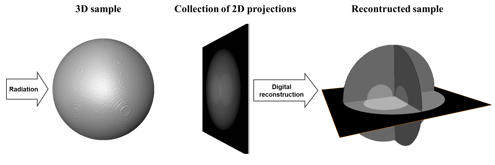{kind=link}
As demonstrated above, tomography is an imaging technique by which the internal 3D structure of a sample can be reconstructed from 2D projections formed by the penetration of radiation through the sample at a series of different angles in the range of [0; 180-degree]. If the radiation rays are parallel, the obtained 2D projections can be separated into independent 1D-projection rows. The sequence of these rows throughout the angular projection range forms a sinogram, i.e. a 2D data array corresponding to each individual row. Applying a reconstruction method on an individual sinogram yields a reconstructed 2D slice of the sample (Fig. 1.3.1). Combining all slices creates the 3D image of the sample.
Fig. 1.3.1 Steps for reconstructing a slice in parallel-beam tomography.¶
1.3.2. Basic components of an X-ray tomography system¶
Fig. 1.3.2 Basic components of an X-ray tomography system and problems associated with them.¶
1.3.2.1. X-ray source¶
An ideal X-ray source for tomography experiments is monochromatic, stable, non-coherent, energy-tunable, high flux, and generates parallel beams. This allows to produce projections of a sample closest to the prediction of a mathematical model which is a necessary condition for reconstructing the sample with high quality. Unfortunately, there is no such source in practice. There are two basic ways of making X-ray sources: by hitting electrons to a target or by changing the direction of electrons moving at near-light speed. The first way is used in lab-based systems. The second way is used at synchrotron facilities.
Synchrotron-based X-ray sources are high-flux, monochromatic (by using a monochromator), energy-tunable, and close to the parallel-beam condition. However, their beams are partially coherent resulting in the interference between transmission beams and scattering beams after going through samples. This, known as the edge-enhanced effect, alters X-ray intensities at the interfaces between different materials of samples as can be seen in Fig. 1.3.3
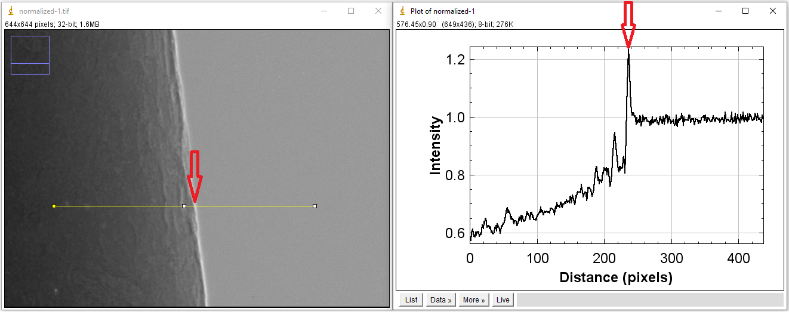Fig. 1.3.3 Coherent source causes the edge-enhanced effect in a projection-image.¶
The edge-enhanced effect is useful for applications where the interfaces between materials are more important than their densities, such as studying crack formation in steels, rocks, or bones. However, this effect gives rise to streak artifacts and causes strong fluctuations of gray scales between interfaces in reconstructed images. These hampers the performance of post-processing methods such as image segmentation or image rescaling.
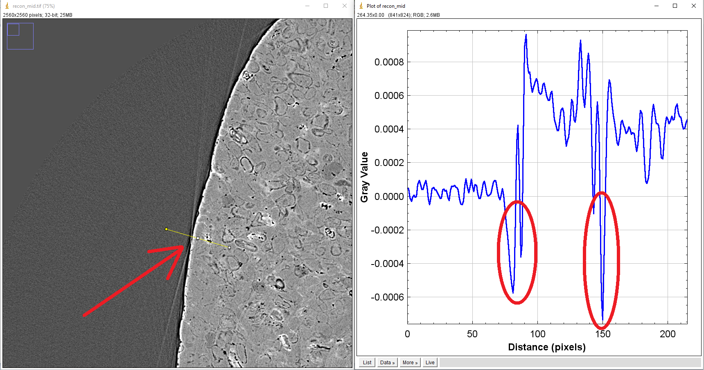Fig. 1.3.4 Impacts of the edge-enhanced effect to a reconstructed image: streak artifacts (arrowed), negative attenuation coefficients (circled).¶
Other problems often seen at synchrotron-based sources come from high-heat-load monochromators. They can cause the fluctuation of source intensity or the shift of intensity profile. These problems impact the process of flat-field correction in tomography which results in artifacts.
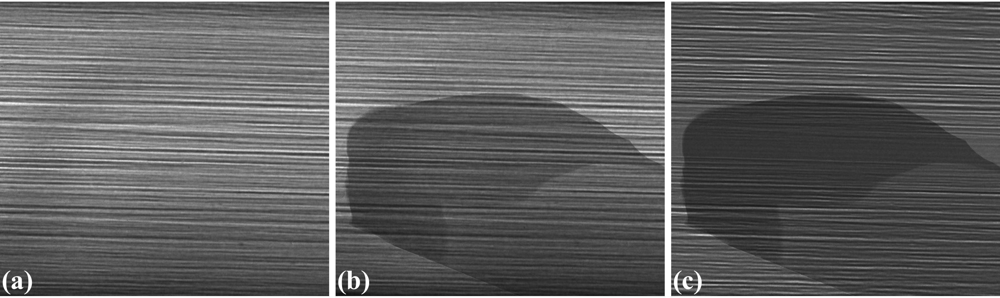Fig. 1.3.5 Impacts of a monochromator to the intensity profile of a source. (a) Flat-field image. (b) Sample image. (c) Flat-field-corrected image¶
1.3.2.2. Stage¶
In a micro-scale system, a major problem caused by the same-stage is the positioning repeatability of the rotation axis. For collecting tomographic data, we have to move a sample in-and-out the field of view to acquire images without the sample (known as flat-field/white-field images) and images with the sample (projection images). It’s quite common that the rotation axis can be shifted a few pixels because of that. As a result, the center of rotation (COR) in the reconstruction space is changed (Fig. 1.3.6). This is inconvenient for the case that one collects multiple-datasets but can’t use the same value of COR across.
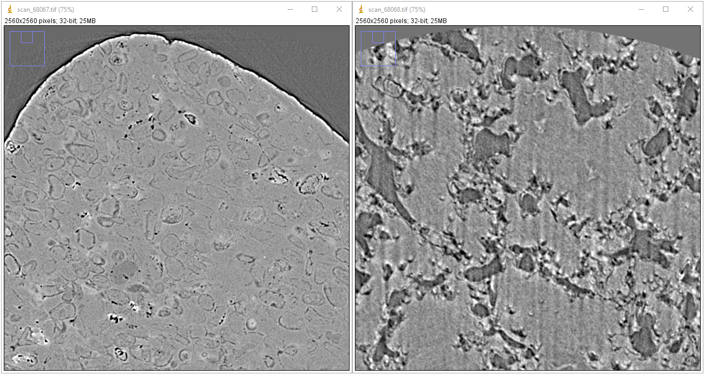Fig. 1.3.6 Center of rotation was changed between two scans¶
In a nano-scale system, the main problem is the positioning accuracy of the stage. This causes the shift between projections of a tomographic dataset. To process such data, we have to apply image alignment/registration methods.
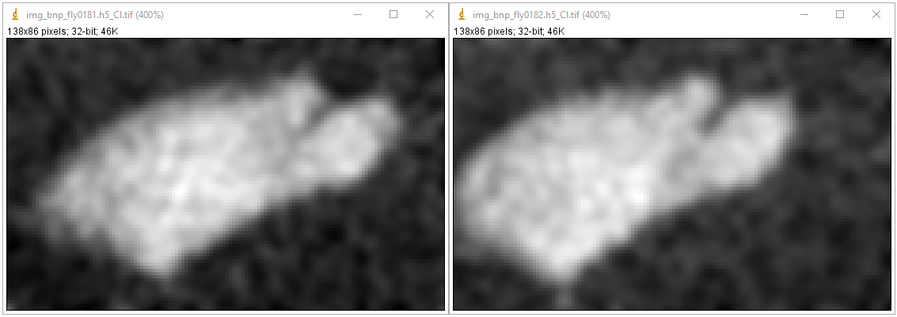Fig. 1.3.7 Shift between two projections acquired by a nanoprobe X-ray fluorescence imaging system.¶
1.3.2.3. Sample¶
Samples can impact to the quality of reconstructed images as demonstrated in a few examples as follows
For samples with strong variation of absorption characteristic, i.e. flat samples, X-rays may not penetrate at some angles or detectors (mostly coupled to a 16-bit or 8-bit CCD chip) can not record such a large dynamic range of intensity. These impacts can result in different types of artifacts as shown in Fig. 1.3.8.
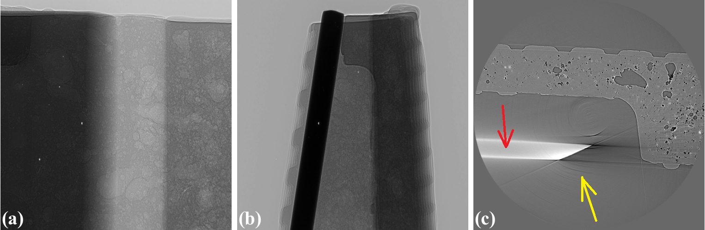Fig. 1.3.8 Artifacts caused by a flat sample. (a) Projection at 0-degree. (b) Projection at 90-degree. (c) Reconstructed image with partial ring artifacts (yellow arrow) and cupping artifacts (red arrow).¶
For crystalline samples, they can block X-rays at certain angles causing partially horizontal dark-stripes in sinograms. This can affect algebraic reconstruction-methods as shown in Fig. 1.3.9.
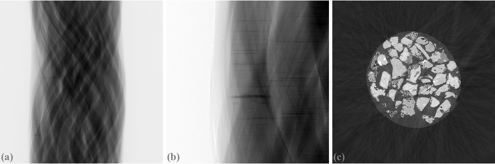Fig. 1.3.9 Artifacts caused by a crystalline sample. (a) Sinogram. (b) Zoom-in at the bottom-left area of (a). (c) Reconstructed image using the SART method.¶
Scanning biological samples using hard X-rays can result in low-contrast images (Fig. 1.3.10). which affects the performance of post-processing methods such as segmentation or feature detection.
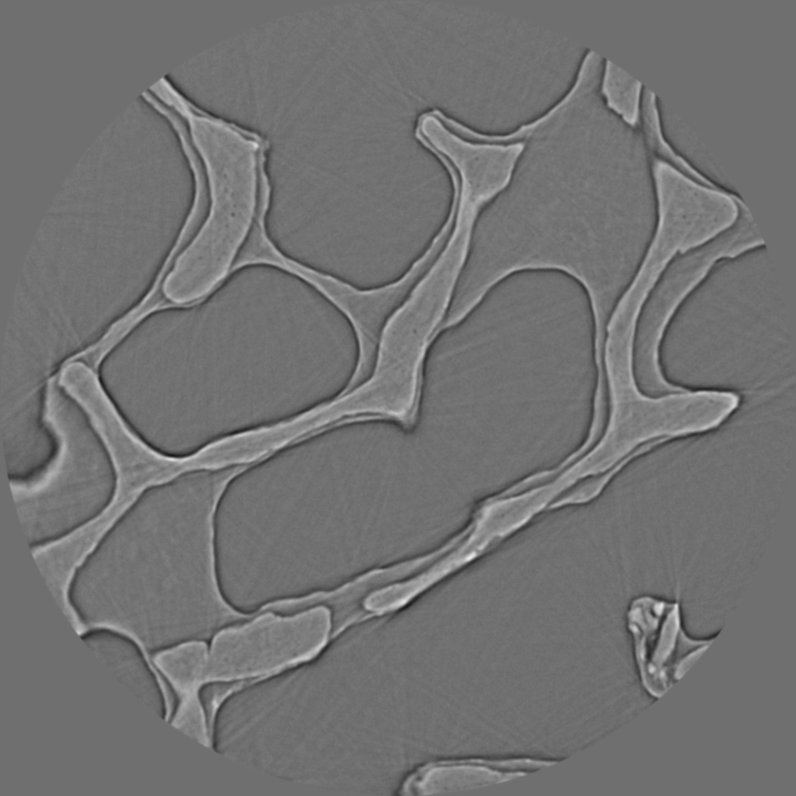Fig. 1.3.10 Reconstructed image of a trabecular bone sample using a 53keV X-ray source.¶
1.3.2.4. Detector¶
Technical problems or limitations of a detecting system can cause various types of artifacts. The irregular response caused by defects in its hardware components, such as a scintillator or CCD chip, gives rise to ring artifacts as described in detail here and shown in Fig. 1.3.11
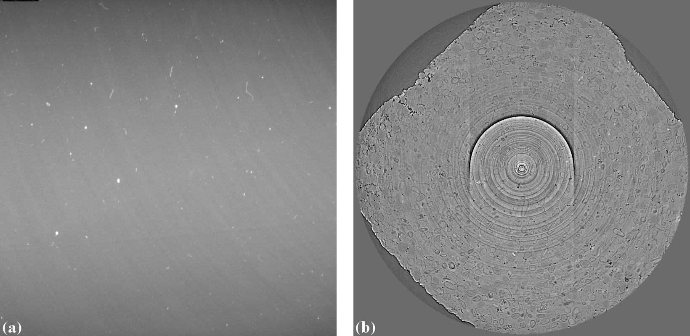Fig. 1.3.11 Ring artifacts caused by defects of a scintillator of a detecting system. (a) Visible defects (white blobs) on a flat field image. (b) Ring artifacts caused by these defects.¶
The scattering of scintillation photons in a scintillator, of an indirect X-ray detector, has a strong effect to the linear response of the system and cause cupping artifacts in reconstructed images (Fig. 1.3.12).
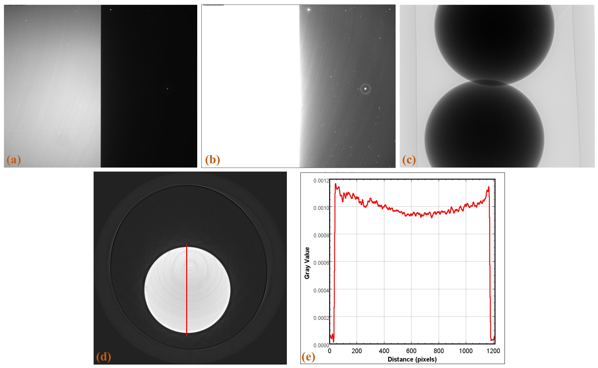Fig. 1.3.12 Cupping artifacts caused by the scattering of scintillation photons. (a) Flat-field image with a half field of view completely blocked using 0.05 s of exposure time. (b) Same as (a) using 0.5 s of exposure time. (c) Projection image of a strong absorber. (d) Reconstructed image. (e) Line profile along the red line in (d).¶
Another common component of a detecting system is a lens which can has radial distortion problem. This problem gives raise to distinguishable artifacts in reconstructed images where artifacts only appear at some areas (Fig. 1.3.13).
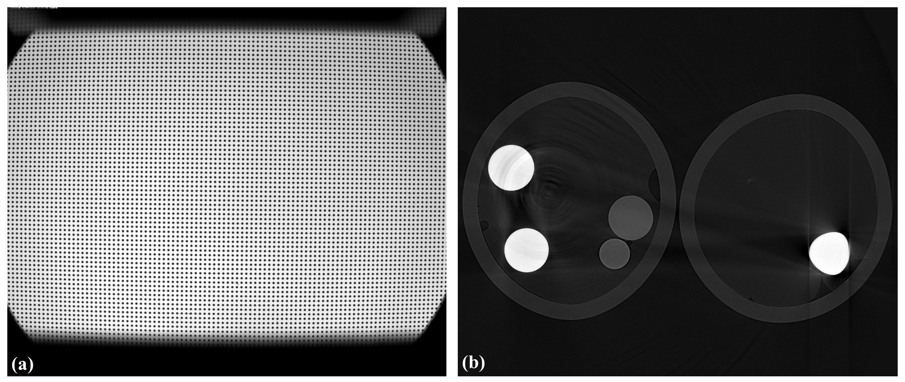Fig. 1.3.13 Artifacts caused the lens-distortion problem. (a) Distorted image of a grid pattern. (b) Artifacts in a reconstructed image.¶
Most of cameras are 16-bit, 14-bit, 12-bit, or 8-bit types. The number of bit dictates the dynamic range of intensity a camera can record. For example, a 16-bit camera can record intensities in the range of 0-65535 counts. In cases that the dynamic range (min-max) of incoming intensities are out of this range no matter how we adjust the exposure time, the acquired images can have underexposed areas or overexposed areas as shown in Fig. 1.3.14. In tomography, for samples giving a high dynamic range of transmission intensities we have to accept the underexposed areas which can give raise to cupping artifacts (Fig. 1.3.8).
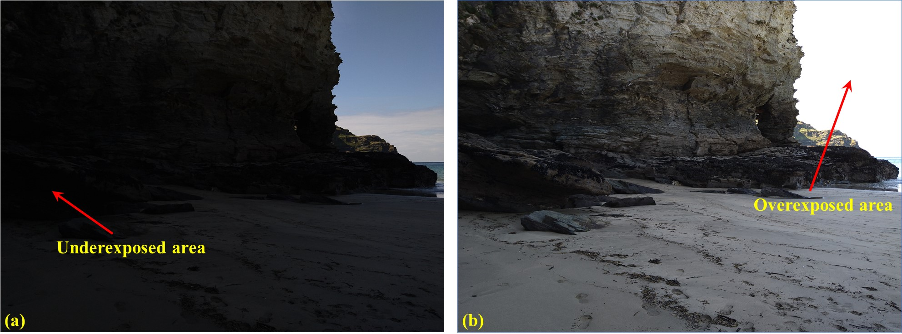Fig. 1.3.14 Problems due to the limited dynamic range of a camera. (a) Underexposed area. (b) Overexposed area.¶
1.3.2.5. Computing resources¶
Available computing resources such as GPU, multicore CPU, RAM, or storage system can dictate the choice of algorithms used for processing tomographic data. Fig. 1.3.15 shows the results of using two reconstruction methods: FBP and SIRT on a slice of a dataset of experiments using time-series tomography at beamline I12, Diamond Light Source, UK. The SIRT returns better result. However, it can’t be used in practice due to the huge number of datasets acquired by the experiments. The total amount of data is ~250 TB and it would take years to reconstruct all of them using the SIRT method.
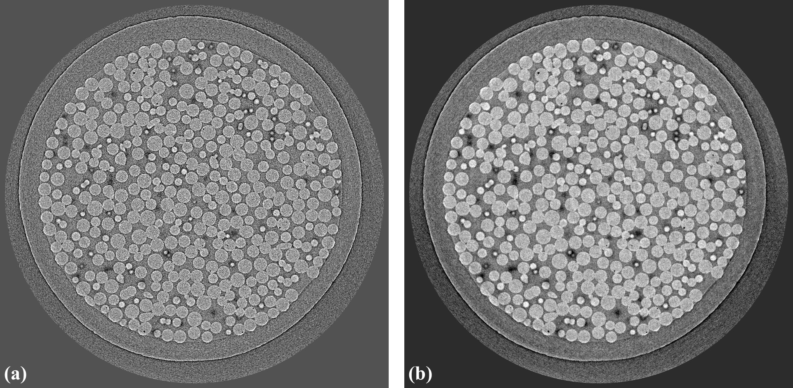Fig. 1.3.15 Comparison of two reconstruction methods. (a) FBP. (b) SIRT.¶